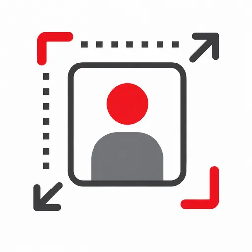

Have you ever tried to submit an online passport renewal, visa application, job resume, or university enrollment form, only to be stopped cold by an error message saying: "Image file size must be between 50KB and 200KB"?
Today's smartphone cameras capture immense amounts of detail, routinely spitting out JPEG and HEIC files measuring 12MB to 25MB each. While incredible for photo prints, these file sizes are completely impractical for email attachments, web publishing, or storage management.
When searching for quick image resizing, the easiest trap is visiting random free online compression websites. When you upload photos of your passport, driver's license, ID card, or family photos to an unknown website, your private images and embedded GPS location metadata (EXIF data) are transmitted to remote servers. Always use an on-device, offline Android app for sensitive images.
Quick Comparison: Best Android Image Resizers
| App | Offline & Private | Batch Mode | Exact KB/MB Target | Best For |
|---|---|---|---|---|
| Image Resizer (ByteGif) | 100% Offline | Yes | Yes (Custom KB/MB) | Privacy, clean UI & batch optimization |
| Photo & Picture Resizer | Offline works (Ads) | Yes | Preset sizes | Pre-defined social media dimension presets |
| Lit Photo | Offline works (Ads) | Yes | Quality slider | Fast batch compression workflows |
| Image Size | Offline works (Ads) | Single photo | Exact mm / cm / inch | Print-ready measurements & aspect ratios |
| Puma Image Resizer | Offline works | Yes (Pro version) | File size targets | Quick email & messenger compression |
| Resize Me! | Offline works | Yes | Percent / Pixels | Basic EXIF tag retention & rotation |
1. Image Resizer by ByteGif — Best Overall for Privacy & Batch Resizing
When you need to resize or compress photos, you should never have to surrender your personal data or endure full-screen pop-up advertisements. Image Resizer by ByteGif is engineered as a clean, native Android utility that does all processing directly on your phone's processor.

Image Resizer
Image Resizer is an offline-first Android tool built to resize, crop, and compress individual photos or entire photo albums in seconds. Whether you need an exact 800x600 resolution, a specific 50% scale, or a file compressed down to precisely 150KB for an official government form, Image Resizer delivers crystal-clear results without touching an internet server.
- 100% On-device processing: zero cloud uploads or data collection
- Multi-photo batch processing: resize dozens of images at once
- Target file size mode: compress photos to exact KB or MB limits
- Maintain original aspect ratio or set custom width & height
- Modern, clean interface without intrusive clutter
Unlike legacy photo apps that blur fine lines during downscaling, Image Resizer uses high-fidelity bicubic interpolation to preserve text legibility on documents, receipts, and identity papers.
2. Photo & Picture Resizer — Great for Social Media Presets
Photo & Picture Resizer by farproc is one of the oldest and most popular photo utilities on the Google Play Store. Its strongest asset is its extensive library of pre-configured dimensions.
If you frequently post to Instagram Stories, YouTube thumbnails, Facebook cover banners, or Twitter/X headers, the app lets you tap the target platform to automatically crop and resize your picture to the exact recommended canvas dimensions.
3. Lit Photo — Fast Batch Compression Engine
Lit Photo focuses heavily on batch compression. If you went on vacation and have 300 photos consuming 4GB on your device, Lit Photo can scan an entire folder, calculate estimated space savings, and compress all 300 photos in the background.
It gives you a dual view slider allowing you to compare the original image against the compressed preview before saving, ensuring no visible compression artifacts ruin the photo.
4. Image Size — Best for Physical Print Measurements
Most resizing apps think exclusively in pixels (e.g., 1920x1080). Image Size is uniquely useful because it lets you specify dimensions in physical measurement units: millimeters (mm), centimeters (cm), or inches (in), alongside custom DPI (dots per inch) settings.
This is invaluable if you are preparing passport photos that strictly require 2x2 inches (51x51 mm) or 35x45 mm print dimensions with 300 DPI print quality.
5. Puma Image Resizer — Simple File Size Reducer
Puma Image Resizer is designed with simplicity at its core. Instead of technical resolution numbers, Puma presents clear intent-based options: "Make Small (Fit for email)", "Make Medium (Fit for web)", or "Set Exact File Size".
It can strip out EXIF metadata automatically to protect your privacy before you send pictures via WhatsApp, Telegram, or email.
6. Resize Me! — Fast Quick Edits with EXIF Retention
Developed by the creator of the popular XnView desktop image suite, Resize Me! is a dependable tool for basic rotation, cropping, and percentage scaling.
It includes an option to preserve full camera EXIF metadata (shutter speed, lens type, aperture, and camera model), which professional photographers often need when exporting portfolio previews.
How to Resize a Photo Down to an Exact KB File Size
- Open Image Resizer on your Android device.
- Select the document or photo from your gallery.
- Select the Target File Size option.
- Enter your target limit (for example:
150 KBfor a government form). - Tap Resize & Save. The app's algorithm will automatically adjust resolution and compression quality to land just below your target limit without sacrificing text clarity.
Understanding Formats: WebP vs. JPEG vs. PNG
Choosing the correct file format can save up to 70% of storage without changing the pixel resolution:
- JPEG / JPG: Best universal compatibility. Great for standard photography, but introduces compression noise around sharp text.
- PNG: Lossless format that supports transparent backgrounds. Ideal for logos, diagrams, and digital signatures, but produces very large file sizes for real-world photos.
- WebP: The modern web standard. Produces files 25% to 35% smaller than JPEG at identical visual quality, and supports transparency. Use WebP for websites and fast sharing.
Final Recommendation: Which Image Resizer is Right for You?
- For privacy, zero ads, batch optimization & exact KB targeting: Install ByteGif Image Resizer.
- For passport photos requiring exact mm or inch print dimensions: Use Image Size.
- For quick social media cover and story aspect ratios: Use Photo & Picture Resizer.
About ByteGif Software Studio
ByteGif builds privacy-first tools, media players, and native utilities for Android, macOS, Windows, Linux, and the web. Our mission is to build software with zero bloat, intuitive design, and absolute respect for user data.